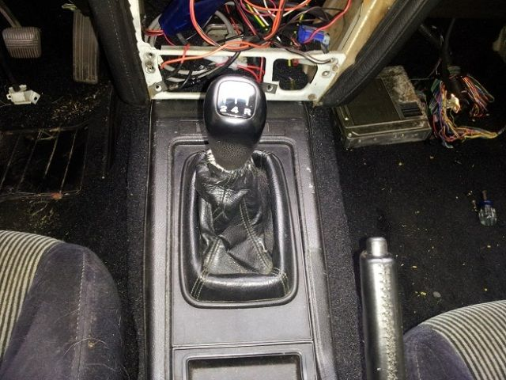
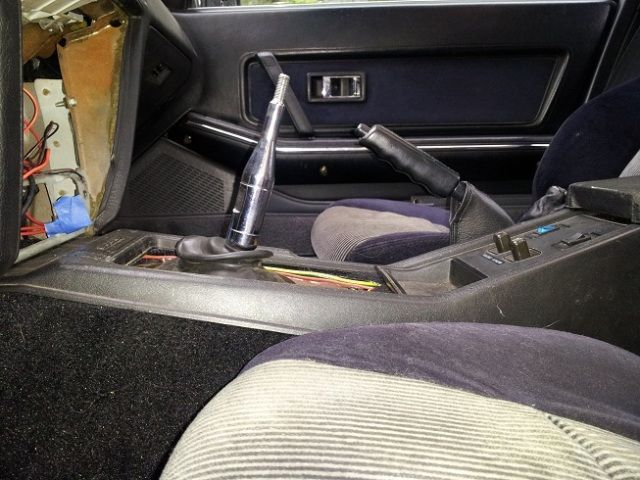

-
I think it's possible to drive out the roll pin on the end of the fork shaft on the Z32 trans and slip the Z31 striker arm over it and re-pin.Mike_GruiZinga wrote: Has anyone taken the shift cover plate off of the Z32 transmission? I am referring to that black 5 or 6 bolt cover on the top of the tail section. Pictures?
Depending on whats going on in there, I may be able to install some Z31 transmission parts (shift rod or something) and have the shifter located there (several inches further forward of the OEM Z32 shifter locale).
I was going to attempt this with a Z32 trans, but I'm not sure if I should risk pulling the one I will buy in two unless I had a reason too, and I didn't want to move my engine back- but seeing the room available, I may consider it… The only thing I can see being a problem is the offset of the z32 striker arm in the case… It doesn't look like it's perfectly centered in the casting, and it might be an issue with fitment of the other shaft end.
The shafts themselves are in the same location as the z31 though, as far as the mid plate of the trans is concerned- because it moves through the plate that holds the bell housing on using a small circlip. I was just worried that I'd take it apart and the striker arm couldn't pivot sideways to turn the shaft because the casting of the 6-bolt square hole at the top seemed like it wasn't in the same position when I was looking at z32 transes. a quarter of an inch off, and it might be impossible unless a new striker arm is made or something. -
http://forums.f31club.com/phpBB3/viewto … &sk=t&sd=a
Since I'm getting ready to do this swap, every bit of info helps.Cha iro
enjoy building it yourself.
if it fails, fuck it.
at least you gave it a whirl. -
For anyone who's done this swap on a non-turbo that originally had the 71c, did the rear cross member line up? Mine doesn't line up by about 20mm. Also, is the t5 rear cross member different to the 71c one?, like is it offset differently?
If nothing else I'll just modify it, but it would be good if something would just bolt in to save me some time. -
Re:
Show us pics. You have to read this thread very carefully, it's full of and scattered info and very few useful pics , but the answers can be weeded out.z31det wrote: For anyone who's done this swap on a non-turbo that originally had the 71c, did the rear cross member line up? Mine doesn't line up by about 20mm. Also, is the t5 rear cross member different to the 71c one?, like is it offset differently?
If nothing else I'll just modify it, but it would be good if something would just bolt in to save me some time.
JoCkeWe wrote: Oh, yes, the Tranny mount(edit: Crossmember) will not bolt on either. But it's seems to be pretty easy to make the T5 tranny mount fit… :PCha iro
enjoy building it yourself.
if it fails, fuck it.
at least you gave it a whirl. -
My 71c cross member bolted right up. On the body there was 4 sets of holes for the cross member to bolt to. it did use a different set than the 71cz31det wrote: For anyone who's done this swap on a non-turbo that originally had the 71c, did the rear cross member line up? Mine doesn't line up by about 20mm. Also, is the t5 rear cross member different to the 71c one?, like is it offset differently?
If nothing else I'll just modify it, but it would be good if something would just bolt in to save me some time.86na2t + holset
feedback
viewtopic.php?f=18&t=6114&hilit=andrew+gardner -
[quote]gardner86zx wrote:Yeah the closest set of holes weren't the same one's as the 71c…Maybe its something to do with it being 2+2? Or maybe the vg30det?Originally posted by z31det
Either way, I ended up modifying the stock z32 cross-member because the 71c cross-member made it sit way too high anyway. The z32 one has a dip in it too accommodate for how fat it is lol....and as a bonus I don't have that stupid 2 piece member now :lol: -
So… which shift bracket is needed for more of a centered allignement of the stick?
the Mazworx or Xcessive Manufacturing?
From what've I gathered, the Xcessive Manufacturing seems a better fit for our z31 setup.
Thoughts? -
The short one form Xcessive Manufacturing is the one you want.86na2t + holset
feedback
viewtopic.php?f=18&t=6114&hilit=andrew+gardner -
In my opinion, that's not true. I made the shifter bracket similar to the Full Length Xcessive Manufacturing and it placed the shifter where I wanted it. The shifter ended up a bit closer to the driver's side, but I'm glad this was the case because it's feels better with it closer to you.gardner86zx wrote: The short one form Xcessive Manufacturing is the one you want.
1988 SS #71
Better to remain silent and be thought a fool, than to speak and remove all doubt. -
+1 for careless bellhousing! -
Nahhh, I say it's closer to +3254!Careless wrote: +1 for careless bellhousing!1988 SS #71
Better to remain silent and be thought a fool, than to speak and remove all doubt. -
[quote]RedDemon wrote:i hope you took pics!Originally posted by Careless -
[quote]RedDemon wrote:My shifter sits closer to the drivers side too. Its because of where the linkage comes out of the tranny. Both the short and full bracket will work but with the short one it puts the shifter at a more stock angle and not straight up and down like yoursOriginally posted by gardner86zx

short

long
I put the two pics next to each other so people could compare them86na2t + holset
feedback
viewtopic.php?f=18&t=6114&hilit=andrew+gardner -
I see, I thought the short mount would put the shifter too far up for the driver, so I decided to make it similar to the long mounts.1988 SS #71
Better to remain silent and be thought a fool, than to speak and remove all doubt. -
RedDemon wrote: I see, I thought the short mount would put the shifter too far up for the driver, so I decided to make it similar to the long mounts.
sooooo you're going to provide DS measurements with the s13/14 subframe and allllll dat? :-D
this is what i'll be doing next spring. then I'll be able to start body work.

Copyright © 2006–. All rights reserved. Privacy Policy